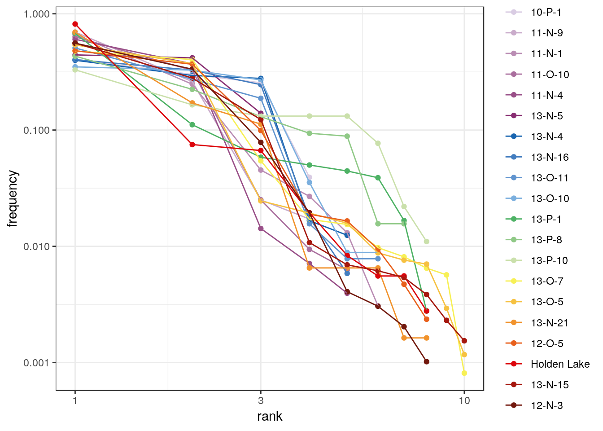

Thereafter, we denote by:
The number of different taxa, provides an instantly comprehensible expression of diversity. While the number of taxa within a sample is easy to ascertain, as a term, it makes little sense: some taxa may not have been seen, or there may not be a fixed number of taxa (e.g. in an open system; Peet 1974). As an alternative, richness (\(S\)) can be used for the concept of taxa number (McIntosh 1967).
\[ \hat{S}_{Chao1} = \begin{cases} S + \frac{N - 1}{N} \frac{s_1^2}{2 s_2} & s_2 > 0 \\ S + \frac{N - 1}{N} \frac{s_1 (s_1 - 1)}{2} & s_2 = 0 \end{cases} \]
In the special case of homogeneous case, a bias-corrected estimator is:
\[ \hat{S}_{Chao1-bc} = S + \frac{N - 1}{N} \frac{s_1 (s_1 - 1)}{2 s_2 + 1}\]
Improved Chao1 estimator (makes use of the additional information of tripletons and quadrupletons; Chiu et al. 2014) :
\[ \hat{S}_{iChao1} = \hat{S}_{Chao1} + \frac{N - 3}{4 N} \frac{s_3}{s_4} \times \max\left(s_1 - \frac{N - 3}{N - 1} \frac{s_2 s_3}{2 s_4} , 0\right)\]
\[ \hat{S}_{ACE} = \hat{S}_{abun} + \frac{\hat{S}_{rare}}{\hat{C}_{rare}} + \frac{s_1}{\hat{C}_{rare}} \times \hat{\gamma}^2_{rare} \]
Where \(\hat{S}_{rare} = \sum_{i = 1}^{k} s_i\) is the number of rare taxa, \(\hat{S}_{abun} = \sum_{i > k}^{N} s_i\) is the number of abundant taxa (for a given cut-off value \(k\)), \(\hat{C}_{rare} = 1 - \frac{s_1}{N_{rare}}\) is the Turing’s coverage estimate and:
\[ \hat{\gamma}^2_{rare} = \max\left[\frac{\hat{S}_{rare}}{\hat{C}_{rare}} \frac{\sum_{i = 1}^{k} i(i - 1)s_i}{\left(\sum_{i = 1}^{k} is_i\right)\left(\sum_{i = 1}^{k} is_i - 1\right)} - 1, 0\right] \]
For replicated incidence data (i.e. a \(m \times p\) logical matrix), the Chao2 estimator is:
\[ \hat{S}_{Chao2} = \begin{cases} S + \frac{m - 1}{m} \frac{q_1^2}{2 q_2} & q_2 > 0 \\ S + \frac{m - 1}{m} \frac{q_1 (q_1 - 1)}{2} & q_2 = 0 \end{cases} \]
Improved Chao2 estimator (Chiu et al. 2014):
\[ \hat{S}_{iChao2} = \hat{S}_{Chao2} + \frac{m - 3}{4 m} \frac{q_3}{q_4} \times \max\left(q_1 - \frac{m - 3}{m - 1} \frac{q_2 q_3}{2 q_4} , 0\right)\]
\[ \hat{S}_{ICE} = \hat{S}_{freq} + \frac{\hat{S}_{infreq}}{\hat{C}_{infreq}} + \frac{q_1}{\hat{C}_{infreq}} \times \hat{\gamma}^2_{infreq} \]
Where \(\hat{S}_{infreq} = \sum_{i = 1}^{k} q_i\) is the number of infrequent taxa, \(\hat{S}_{freq} = \sum_{i > k}^{N} q_i\) is the number of frequent taxa (for a given cut-off value \(k\)), \(\hat{C}_{infreq} = 1 - \frac{Q_1}{\sum_{i = 1}^{k} iq_i}\) is the Turing’s coverage estimate and:
\[ \hat{\gamma}^2_{infreq} = \max\left[\frac{\hat{S}_{infreq}}{\hat{C}_{infreq}} \frac{m_{infreq}}{m_{infreq} - 1} \frac{\sum_{i = 1}^{k} i(i - 1)q_i}{\left(\sum_{i = 1}^{k} iq_i\right)\left(\sum_{i = 1}^{k} iq_i - 1\right)} - 1, 0\right] \]
Where \(m_{infreq}\) is the number of sampling units that include at least one infrequent species.
It is not always possible to ensure that all sample sizes are equal and the number of different taxa increases with sample size and sampling effort (Magurran 1988). Then, rarefaction (\(E(S)\)) is the number of taxa expected if all samples were of a standard size \(n\) (i.e. taxa per fixed number of individuals). Rarefaction assumes that imbalances between taxa are due to sampling and not to differences in actual abundances.
Hurlbert (1971) unbiaised estimate of Sander (1968) rarefaction:
\[ E(S) = \sum_{i = 1}^{S} 1 - \frac{{N - N_i} \choose n}{N \choose n} \] Where \(n\) is the sub-sample size.
Diversity measurement assumes that all individuals in a specific taxa are equivalent and that all types are equally different from each other (Peet 1974). A measure of diversity can be achieved by using indices built on the relative abundance of taxa. These indices (sometimes referred to as non-parametric indices) benefit from not making assumptions about the underlying distribution of taxa abundance: they only take relative abundances of the species that are present and species richness into account. Peet (1974) refers to them as indices of heterogeneity (\(H\)).
Diversity indices focus on one aspect of the taxa abundance and emphasize either richness (weighting towards uncommon taxa) or dominance (weighting towards abundant taxa; Magurran 1988).
Evenness (\(E\)) is a measure of how evenly individuals are distributed across the sample.
The Shannon-Wiener index (Shannon 1948) assumes that individuals are randomly sampled from an infinite population and that all taxa are represented in the sample (it does not reflect the sample size). The main source of error arises from the failure to include all taxa in the sample: this error increases as the proportion of species discovered in the sample declines (Peet 1974; Magurran 1988). The maximum likelihood estimator (MLE) is used for the relative abundance, this is known to be negatively biased by sample size.
Diversity:
\[ H' = - \sum_{i = 1}^{S} p_i \ln p_i \]
Evenness:
\[ E = \frac{H'}{H'_{max}} = \frac{H'}{\ln S} = - \sum_{i = 1}^{S} p_i \log_S p_i \]
When \(p_i\) is unknown in the population, an estimate is given by \(\hat{p}_i =\frac{n_i}{N}\) (maximum likelihood estimator - MLE). As the use of \(\hat{p}_i\) results in a biased estimate, Hutcheson (1970) and Bowman et al. (1971) suggest the use of:
\[ \hat{H}' = - \sum_{i = 1}^{S} \hat{p}_i \ln \hat{p}_i - \frac{S - 1}{N} + \frac{1 - \sum_{i = 1}^{S} \hat{p}_i^{-1}}{12N^2} + \frac{\sum_{i = 1}^{S} (\hat{p}_i^{-1} - \hat{p}_i^{-2})}{12N^3} + \cdots \]
This error is rarely significant (Peet 1974), so the unbiaised form is not implemented here (for now).
The Brillouin index (Brillouin 1956) describes a known collection: it does not assume random sampling in an infinite population. Pielou (1975) and Laxton (1978) argues for the use of the Brillouin index in all circumstances, especially in preference to the Shannon index.
Diversity:
\[ HB = \frac{\ln (N!) - \sum_{i = 1}^{S} \ln (n_i!)}{N} \]
Evenness:
\[ E = \frac{HB}{HB_{max}} \]
with:
\[ HB_{max} = \frac{1}{N} \ln \frac{N!}{\left( \lfloor \frac{N}{S} \rfloor! \right)^{S - r} \left[ \left( \lfloor \frac{N}{S} \rfloor + 1 \right)! \right]^{r}} \]
where: \(r = N - S \lfloor \frac{N}{S} \rfloor\).
The following methods return a dominance index, not the reciprocal or inverse form usually adopted, so that an increase in the value of the index accompanies a decrease in diversity.
The Simpson index (Simpson 1949) expresses the probability that two individuals randomly picked from a finite sample belong to two different types. It can be interpreted as the weighted mean of the proportional abundances. This metric is a true probability value, it ranges from \(0\) (perfectly uneven) to \(1\) (perfectly even).
Dominance for an infinite sample:
\[ D = \sum_{i = 1}^{S} p_i^2 \]
Dominance for a finite sample:
\[ \lambda = \sum_{i = 1}^{S} \frac{n_i \left( n_i - 1 \right)}{N \left( N - 1 \right)} \]
The McIntosh index (McIntosh 1967) expresses the heterogeneity of a sample in geometric terms. It describes the sample as a point of a \(S\)-dimensional hypervolume and uses the Euclidean distance of this point from the origin.
Dominance:
\[ D = \frac{N - U}{N - \sqrt{N}} \]
Evenness:
\[ E = \frac{N - U}{N - \frac{N}{\sqrt{S}}} \]
where \(U\) is the distance of the sample from the origin in an \(S\) dimensional hypervolume:
\[U = \sqrt{\sum_{i = 1}^{S} n_i^2}\]
The Berger-Parker index (Berger and Parker 1970) expresses the proportional importance of the most abundant type. This metric is highly biased by sample size and richness, moreover it does not make use of all the information available from sample.
Dominance:
\[ d = \frac{n_{max}}{N} \]
mississippi <- as(mississippi, "CountMatrix")
H <- diversity(
mississippi,
method = c("shannon", "brillouin", "simpson", "mcintosh", "berger"),
simplify = TRUE
)
head(H)
#> shannon brillouin simpson mcintosh berger
#> 10-P-1 1.2027955 1.1572676 0.3166495 0.4714431 0.4052288
#> 11-N-9 0.7646565 0.7541207 0.5537760 0.2650711 0.6965699
#> 11-N-1 0.9293974 0.9192403 0.5047209 0.2975381 0.6638526
#> 11-O-10 0.8228576 0.8085445 0.5072514 0.2990830 0.6332288
#> 11-N-4 0.7901428 0.7823396 0.5018826 0.2997089 0.6034755
#> 13-N-5 0.9998430 0.9442803 0.3823434 0.4229570 0.4430380Note that berger, mcintosh and simpson methods return a dominance index, not the reciprocal form usually adopted, so that an increase in the value of the index accompanies a decrease in diversity.
Corresponding evenness can also be computed :
E <- evenness(
mississippi,
method = c("brillouin", "mcintosh", "shannon", "simpson"),
simplify = TRUE
)
head(E)
#> brillouin mcintosh shannon simpson
#> 10-P-1 0.8655943 0.8666584 0.8676335 0.7895166
#> 11-N-9 0.5491751 0.5108866 0.5515831 0.4514461
#> 11-N-1 0.5168354 0.4888798 0.5187066 0.3302155
#> 11-O-10 0.5086064 0.5196260 0.5112702 0.3942818
#> 11-N-4 0.4894441 0.5269406 0.4909433 0.3984996
#> 13-N-5 0.9074079 0.8881365 0.9100964 0.8718166The following methods can be used to acertain the degree of turnover in taxa composition along a gradient on qualitative (presence/absence) data. This assumes that the order of the matrix rows (from 1 to \(m\)) follows the progression along the gradient/transect.
We denote the \(m \times p\) incidence matrix by \(X = \left[ x_{ij} \right] ~\forall i \in \left[ 1,m \right], j \in \left[ 1,p \right]\) and the \(p \times p\) corresponding co-occurrence matrix by \(Y = \left[ y_{ij} \right] ~\forall i,j \in \left[ 1,p \right]\), with row and column sums:
\[\begin{align} x_{i \cdot} = \sum_{j = 1}^{p} x_{ij} && x_{\cdot j} = \sum_{i = 1}^{m} x_{ij} && x_{\cdot \cdot} = \sum_{j = 1}^{p} \sum_{i = 1}^{m} x_{ij} && \forall x_{ij} \in \lbrace 0,1 \rbrace \\ y_{i \cdot} = \sum_{j \geqslant i}^{p} y_{ij} && y_{\cdot j} = \sum_{i \leqslant j}^{p} y_{ij} && y_{\cdot \cdot} = \sum_{i = 1}^{p} \sum_{j \geqslant i}^{p} y_{ij} && \forall y_{ij} \in \lbrace 0,1 \rbrace \end{align}\]
\[ \beta_W = \frac{S}{\alpha} - 1 \]
where \(\alpha\) is the mean sample diversity: \(\alpha = \frac{x_{\cdot \cdot}}{m}\).
\[ \beta_C = \frac{g(H) + l(H)}{2} - 1 \]
where \(g(H)\) is the number of taxa gained along the transect and \(l(H)\) the number of taxa lost.
\[\begin{align} \beta_R &= \frac{S^2}{2 y_{\cdot \cdot} + S} - 1 \\ \beta_I &= \log x_{\cdot \cdot} - \frac{\sum_{j = 1}^{p} x_{\cdot j} \log x_{\cdot j}}{x_{\cdot \cdot}} - \frac{\sum_{i = 1}^{m} x_{i \cdot} \log x_{i \cdot}}{x_{\cdot \cdot}} \\ \beta_E &= \exp(\beta_I) - 1 \end{align}\]
Similarity between two samples \(a\) and \(b\) or between two types \(x\) and \(y\) can be measured as follow.
These indices provide a scale of similarity from \(0\)-\(1\) where \(1\) is perfect similarity and \(0\) is no similarity, with the exception of the Brainerd-Robinson index which is scaled between \(0\) and \(200\).
\(a_j\) and \(b_j\) denote the number of individuals in the \(j\)-th type/taxon, \(j \in \left[ 1,n \right]\). \(o_j\) denotes the number of type/taxon common to both sample/case: \(o_j = \sum_{k = 1}^{n} a_k \cap b_k\).
\(x_i\) and \(y_i\) denote the number of individuals in the \(i\)-th sample/case, \(i \in \left[ 1,m \right]\). \(o_i\) denotes the number of sample/case common to both type/taxon: \(o_i = \sum_{k = 1}^{m} x_k \cap y_k\).
\[ C_{BR} = 200 - \sum_{j = 1}^{S} \left| \frac{a_j \times 100}{\sum_{j = 1}^{S} a_j} - \frac{b_j \times 100}{\sum_{j = 1}^{S} b_j} \right|\]
Bray and Curtis (1957) modified version of Sorenson’s index:
\[ C_N = \frac{2 \sum_{j = 1}^{S} \min(a_j, b_j)}{N_a + N_b} \]
Ranks vs abundance plot can be used for abundance models (model fitting will be implemented in a futur release):
plotRank(mississippi, log = "xy", facet = FALSE) +
ggplot2::theme_bw() +
khroma::scale_color_rainbow()
Berger, W. H., and F. L. Parker. 1970. “Diversity of Planktonic Foraminifera in Deep-Sea Sediments.” Science 168 (3937): 1345–7. https://doi.org/10.1126/science.168.3937.1345.
Bowman, K. O., K. Hutcheson, E. P. Odum, and L. R. Shenton. 1971. “Comments on the Distribution of Indices of Diversity.” In Statistical Ecology, edited by E. C. Patil, E. C. Pielou, and W. E. Waters, 3:315–66. University Park, PA: Pennsylvania State University Press.
Brainerd, George W. 1951. “The Place of Chronological Ordering in Archaeological Analysis.” American Antiquity 16 (04): 301–13. https://doi.org/10.2307/276979.
Bray, J. Roger, and J. T. Curtis. 1957. “An Ordination of the Upland Forest Communities of Southern Wisconsin.” Ecological Monographs 27 (4): 325–49. https://doi.org/10.2307/1942268.
Brillouin, Leon. 1956. Science and Information Theory. New York: Academic Press.
Chao, Anne. 1984. “Nonparametric Estimation of the Number of Classes in a Population.” Scandinavian Journal of Statistics 11 (4): 265–70.
———. 1987. “Estimating the Population Size for Capture-Recapture Data with Unequal Catchability.” Biometrics 43 (4): 783–91. https://doi.org/10.2307/2531532.
Chao, Anne, and Chun-Huo Chiu. 2016. “Species Richness: Estimation and Comparison.” In Wiley StatsRef: Statistics Reference Online, edited by N. Balakrishnan, Theodore Colton, Brian Everitt, Walter Piegorsch, Fabrizio Ruggeri, and Jozef L. Teugels, 1–26. Chichester, UK: John Wiley & Sons, Ltd. https://doi.org/10.1002/9781118445112.stat03432.pub2.
Chao, Anne, and Shen-Ming Lee. 1992. “Estimating the Number of Classes via Sample Coverage.” Journal of the American Statistical Association 87 (417): 210–17. https://doi.org/10.1080/01621459.1992.10475194.
Chiu, Chun-Huo, Yi-Ting Wang, Bruno A. Walther, and Anne Chao. 2014. “An Improved Nonparametric Lower Bound of Species Richness via a Modified Good-Turing Frequency Formula.” Biometrics 70 (3): 671–82. https://doi.org/10.1111/biom.12200.
Cody, M. L. 1975. “Towards a Theory of Continental Species Diversity: Bird Distributions over Mediterranean Habitat Gradients.” In Ecology and Evolution of Communities, edited by M. L. Cody and J. M. Diamond, 214–57. Cambridge, MA: Harvard University Press.
Hurlbert, Stuart H. 1971. “The Nonconcept of Species Diversity: A Critique and Alternative Parameters.” Ecology 52 (4): 577–86. https://doi.org/10.2307/1934145.
Hutcheson, K. 1970. “A Test for Comparing Diversity Based on the Shannon Formula.” Journal of Theoretical Biology 29 (1): 151–54. https://doi.org/10.1016/0022-5193(70)90124-4.
Kintigh, Keith. 2006. “Ceramic Dating and Type Associations.” In Managing Archaeological Data: Essays in Honor of Sylvia W. Gaines, edited by Jeffrey Hantman and Rachel Most, 17–26. Anthropological Research Paper 57. Tempe, AZ: Arizona State University. https://doi.org/10.6067/XCV8J38QSS.
Laxton, R.R. 1978. “The Measure of Diversity.” Journal of Theoretical Biology 70 (1): 51–67. https://doi.org/10.1016/0022-5193(78)90302-8.
Magurran, Anne E. 1988. Ecological Diversity and Its Measurement. Princeton, NJ: Princeton University Press.
Margalef, R. 1958. “Information Theory in Ecology.” General Systems 3: 36–71.
McIntosh, Robert P. 1967. “An Index of Diversity and the Relation of Certain Concepts to Diversity.” Ecology 48 (3): 392–404. https://doi.org/10.2307/1932674.
Menhinick, Edward F. 1964. “A Comparison of Some Species-Individuals Diversity Indices Applied to Samples of Field Insects.” Ecology 45 (4): 859–61. https://doi.org/10.2307/1934933.
Peet, R K. 1974. “The Measurement of Species Diversity.” Annual Review of Ecology and Systematics 5 (1): 285–307. https://doi.org/10.1146/annurev.es.05.110174.001441.
Pielou, E. C. 1975. Ecological Diversity. New York: Wiley.
Robinson, W. S. 1951. “A Method for Chronologically Ordering Archaeological Deposits.” American Antiquity 16 (04): 293–301. https://doi.org/10.2307/276978.
Routledge, R. D. 1977. “On Whittaker’s Components of Diversity.” Ecology 58 (5): 1120–7. https://doi.org/10.2307/1936932.
Sander, Howard L. 1968. “Marine Benthic Diversity: A Comparative Study.” The American Naturalist 102 (925): 243–82. https://www.jstor.org/stable/2459027.
Shannon, C. E. 1948. “A Mathematical Theory of Communication.” The Bell System Technical Journal 27: 379–423. https://doi.org/10.1002/j.1538-7305.1948.tb01338.x.
Simpson, E. H. 1949. “Measurement of Diversity.” Nature 163 (4148): 688–88. https://doi.org/10.1038/163688a0.
Whittaker, R. H. 1960. “Vegetation of the Siskiyou Mountains, Oregon and California.” Ecological Monographs 30 (3): 279–338. https://doi.org/10.2307/1943563.
Wilson, M. V., and A. Shmida. 1984. “Measuring Beta Diversity with Presence-Absence Data.” The Journal of Ecology 72 (3): 1055–64. https://doi.org/10.2307/2259551.